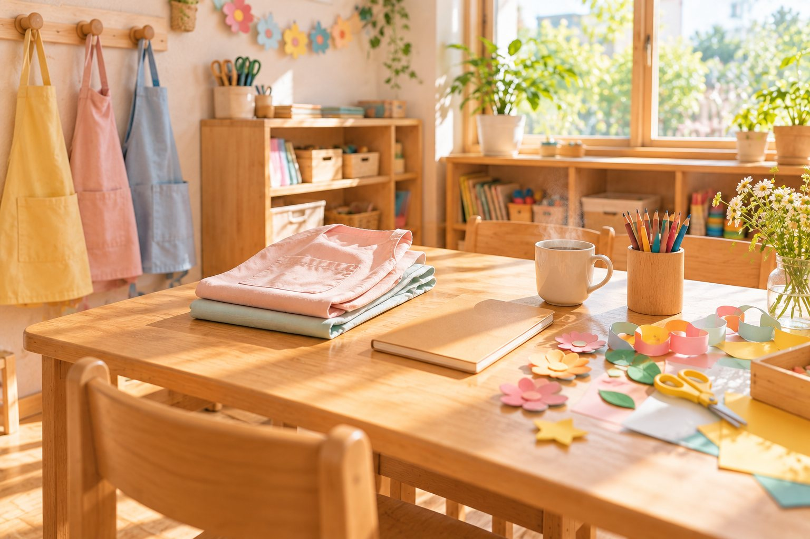

働く姿を知る
こどもたちのそばで、仲間とともに、日々の保育に向き合っています。
写真はイメージです
保育の仕事を具体的に
こどもたちの毎日の生活を支える、主な仕事の流れをご紹介します。
- 1
受け入れ
こどもたちを迎え、一人ひとりの様子を把握します。
- 2
あそび・生活のサポート
あそびや生活の場面で、こどもたちの育ちを支えます。
- 3
記録・準備
こどもの姿を記録し、次の保育に向けて準備します。
- 4
引き継ぎ
職員同士で情報を共有し、継続した保育につなげます。

仕事内容や勤務時間は、職種・勤務先により異なります。
詳しい仕事内容・募集要項を見るあなたに合う入口から
それぞれの状況に合わせた採用のご案内をご用意しています。

応募前の疑問もお聞かせください
見学のこと、働き方のこと。気になることがあればお気軽にご相談ください。
園の見学について
応募するかどうかは、園を見てから決めていただいてかまいません。見学の日時はお問い合わせください。
勤務先や働き方について
勤務時間、日数、入職の時期など、ご事情をうかがったうえでご相談します。詳しい条件は新卒・中途の募集要項をご確認ください。
応募に必要なものについて
新卒採用は履歴書の送り先を見学の際にお伝えします。中途採用は面接・ご相談からご案内します。まずはお問い合わせください。